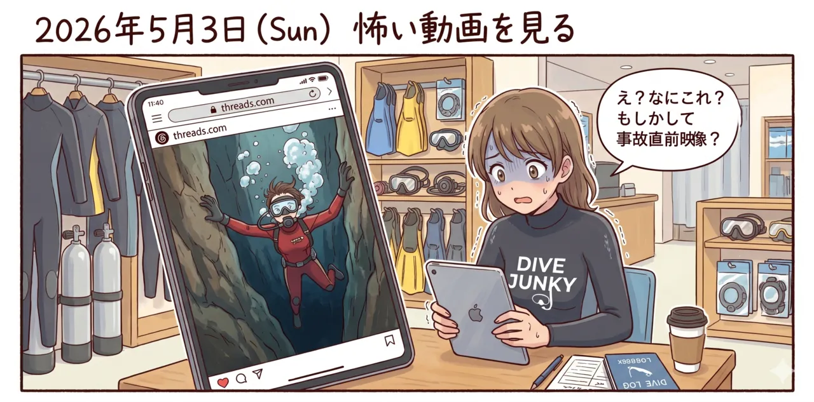
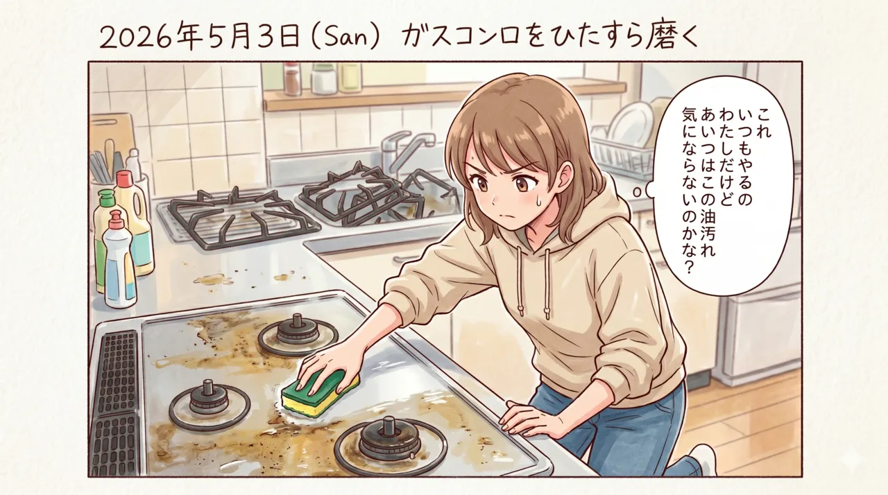
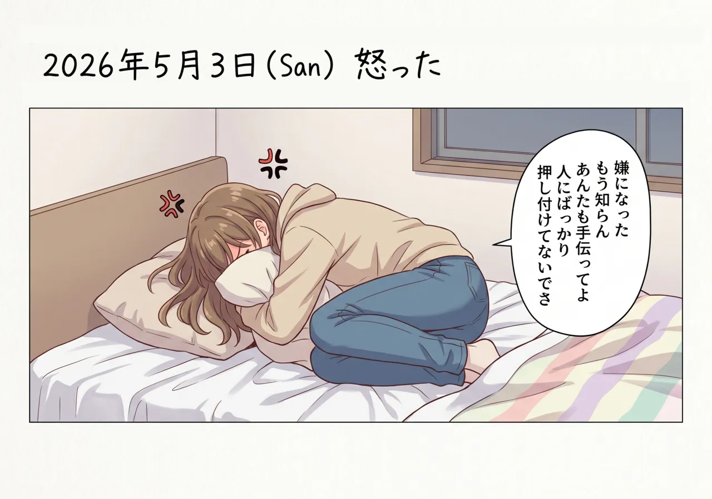

The road Orz passed by 2026 年 05 月
05 月 03 日 ( 日 )
今日と39年前の OW 講習中の絵日記
1987.07.12 (San)
1987 年 07 月 12 日（日）スクーバヘッドファーストの練習で注意を受ける
2026.05.03 (San) #1
2026 年 05 月 03 日（日）怖い動画を見てしまう

2026.05.03 (San) #2
2026 年 05 月 03 日（日）今夜はトンテキ
2026.05.03 (San) #2
2026 年 05 月 03 日（日）油汚れのひどいガスコンロをひたすら磨く

2026.05.03 (San) #2
2026 年 05 月 03 日（日）油汚れのひどいガスコンロをひたすら磨くんだけど
2026.05.03 (San) #2
2026 年 05 月 03 日（日）ストライキ決行中

- Category :
- #Records of Orz's Road
- #